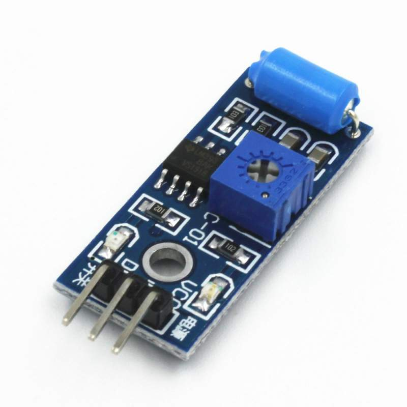

Dokumentasi Teknis
Detail komponen dan implementasi sistem
Diagram Blok Sistem
INPUT
IR Sensor, SW-420
PROCESSING
Arduino Uno
OUTPUT
Servo, LCD I2C

Sensor IR
Mendeteksi keberadaan kendaraan di pintu masuk dan keluar dengan akurasi tinggi
- • Range deteksi: 2-30cm
- • Output: Digital HIGH/LOW
- • Tegangan kerja: 3.3V - 5V

Motor Servo
Mengontrol palang pintu parkir secara otomatis dengan presisi sudut 0-180°
- • Tipe: SG90 Micro Servo
- • Torsi: 2.5 kg/cm
- • Kecepatan: 0.1s/60°

LCD I2C 16x2
Menampilkan informasi slot parkir tersedia dan status sistem
- • Ukuran: 16 karakter x 2 baris
- • Interface: I2C (2 pin)
- • Backlight: LED Biru/Hijau

Sensor SW-420
Mendeteksi getaran untuk keamanan tambahan dan monitoring aktivitas
- • Sensitivitas: Adjustable
- • Output: Digital & Analog
- • Aplikasi: Anti-theft, monitoring
Contoh Kode Arduino
#include <Wire.h>
#include <LiquidCrystal_I2C.h>
#include <Servo.h>
// Inisialisasi komponen
LiquidCrystal_I2C lcd(0x27, 16, 2);
Servo gateServo;
const int IR_IN = 2;
const int IR_OUT = 3;
const int SW420 = 4;
const int SERVO_PIN = 9;
int slotTersedia = 10;
void setup() {
pinMode(IR_IN, INPUT);
pinMode(IR_OUT, INPUT);
pinMode(SW420, INPUT);
gateServo.attach(SERVO_PIN);
lcd.init();
lcd.backlight();
lcd.setCursor(0, 0);
lcd.print("Sistem Parkir");
lcd.setCursor(0, 1);
lcd.print("Slot: ");
lcd.print(slotTersedia);
}
void loop() {
if (digitalRead(IR_IN) == LOW && slotTersedia > 0) {
bukaGate();
slotTersedia--;
updateLCD();
delay(3000);
tutupGate();
}
if (digitalRead(SW420) == HIGH) {
lcd.setCursor(0, 1);
lcd.print("Getaran!");
delay(1000);
}
}
void bukaGate() {
gateServo.write(90);
}
void tutupGate() {
gateServo.write(0);
}